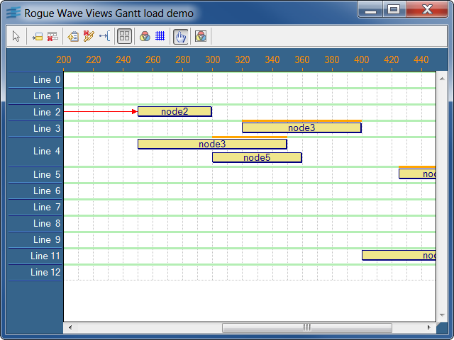

loadA customized Gantt chart shows the load information of the resources.
This sample shows how to customize the grid of the Gantt chart in order to show the load information of the resources.
This information is a colored line:
IlvGanttChartIlvGanttLineIlvGanttNodeIlvGanttSubNode